We're sorry but songjingkuan doesn't work properly without JavaScript enabled. Please enable it to continue.
Back
|
Compact Representation
|
Cross-media Analysis
|
Representation Safety
Cross Media Analysis
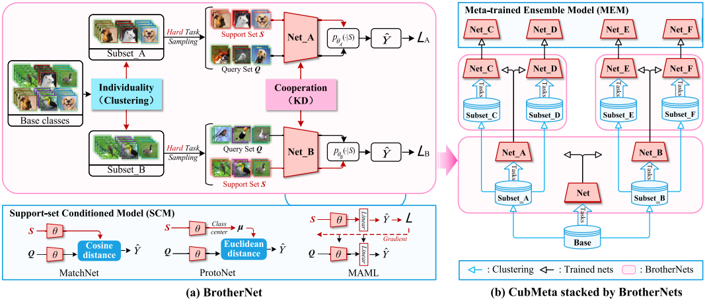
35. Progressive Meta-Learning With Curriculum
Ji Zhang, Jingkuan Song, Lianli Gao, Ye Liu, Heng Tao Shen
IEEE Trans. Circuits Syst. Video Technol. 2022
PDF
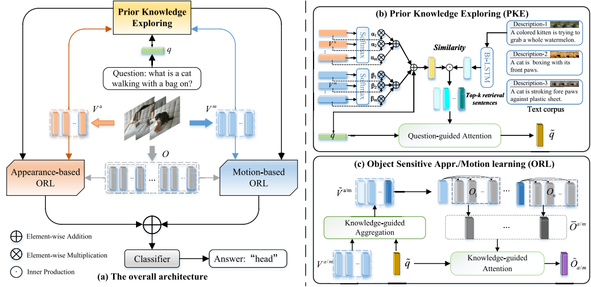
34. Video Question Answering With Prior Knowledge and Object-Sensitive Learning
Pengpeng Zeng, Haonan Zhang, Lianli Gao, Jingkuan Song, Heng Tao Shen
IEEE Trans. Image Process. 2022
PDF
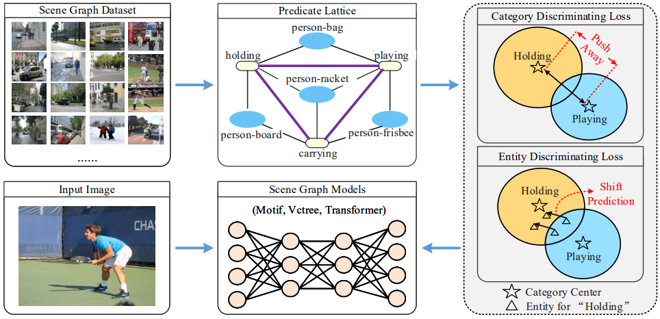
33. Fine-Grained Predicates Learning for Scene Graph Generation
Xinyu Lyu, Lianli Gao, Yuyu Guo, Zhou Zhao, Hao Huang, Heng Tao Shen, Jingkuan Song
CVPR 2022
PDF
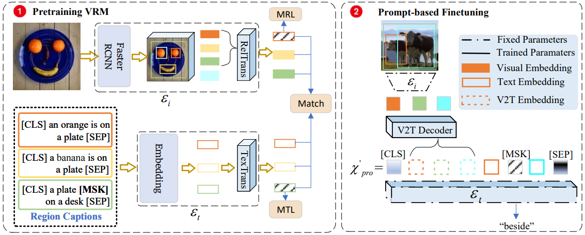
32. Towards Open-Vocabulary Scene Graph Generation with Prompt-Based Finetuning
Tao He, Lianli Gao, Jingkuan Song, Yuan-Fang Li
ECCV 2022
PDF
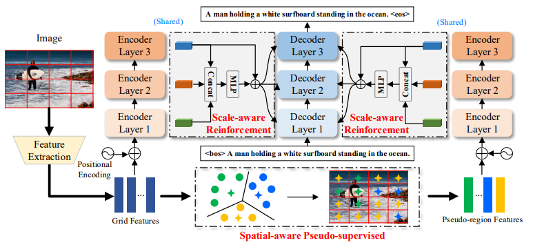
31. S2 Transformer for Image Captioning
Pengpeng Zeng, Haonan Zhang, Jingkuan Song, Lianli Gao
IJCAI 2022
PDF
CODE
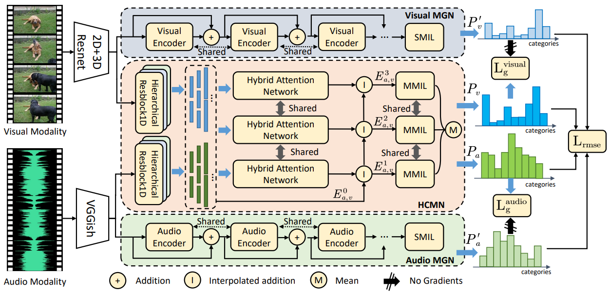
30. DHHN: Dual Hierarchical Hybrid Network for Weakly-Supervised Audio-Visual Video Parsing
Xun Jiang, Xing Xu, Zhiguo Chen, Jingran Zhang, Jingkuan Song, Fumin Shen, Huimin Lu, Heng Tao Shen
ACM Multimedia 2022
PDF
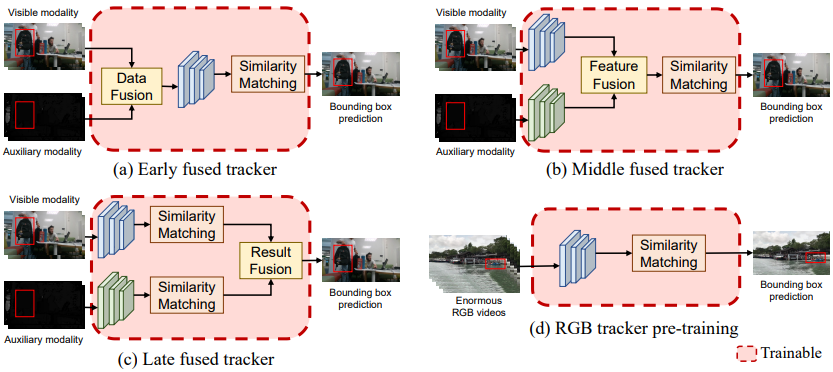
29. Prompting for Multi-Modal Tracking
Jinyu Yang, Zhe Li, Feng Zheng, Ales Leonardis, Jingkuan Song
ACM Multimedia 2022
PDF
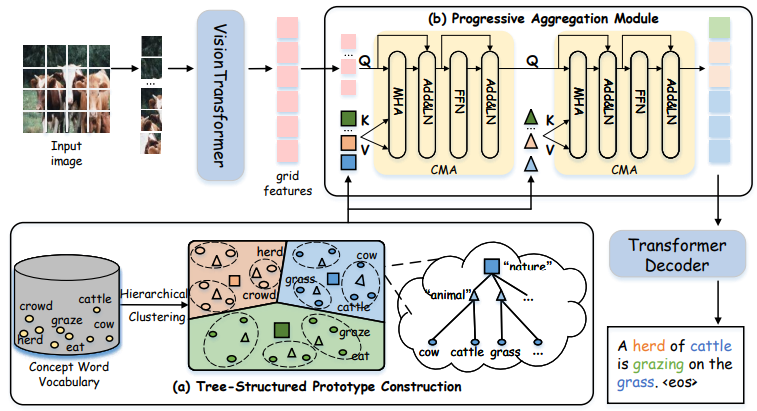
28. Progressive Tree-Structured Prototype Network for End-to-End Image Captioning
Pengpeng Zeng, Jinkuan Zhu, Jingkuan Song, Lianli Gao
ACM Multimedia 2022
PDF
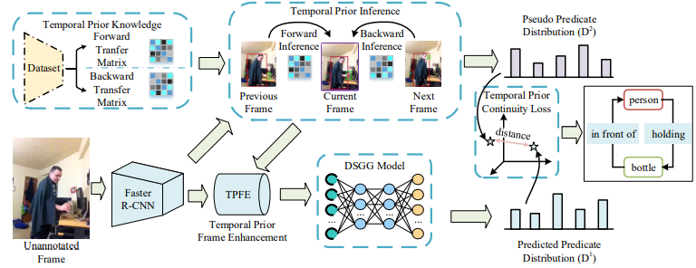
27. Dynamic Scene Graph Generation via Temporal Prior Inference
Shuang Wang, Lianli Gao, Xinyu Lyu, Yuyu Guo, Pengpeng Zeng, Jingkuan Song
ACM Multimedia 2022
PDF
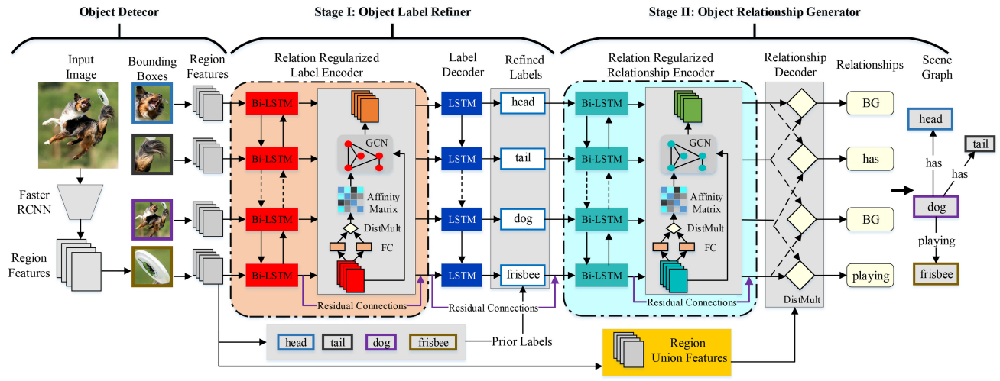
26. Relation Regularized Scene Graph Generation
Yuyu Guo, Lianli Gao, Jingkuan Song, Peng Wang, Nicu Sebe, Heng Tao Shen, Xuelong Li
IEEE Trans. Cybern. 2021
PDF
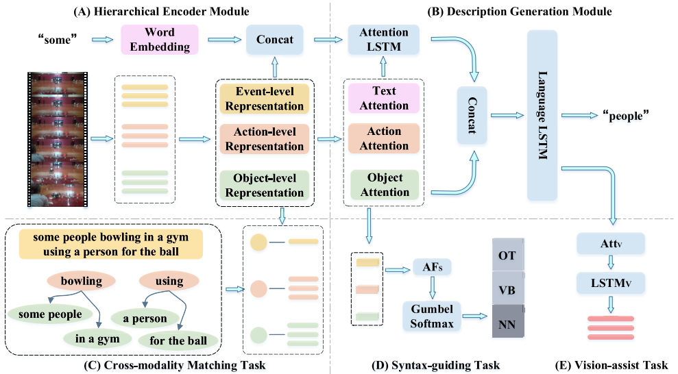
25. Hierarchical Representation Network With Auxiliary Tasks for Video Captioning and Video Question Answering
Lianli Gao, Yu Lei, Pengpeng Zeng, Jingkuan Song, Meng Wang, Heng Tao Shen
IEEE Trans. Image Process. 2021
PDF
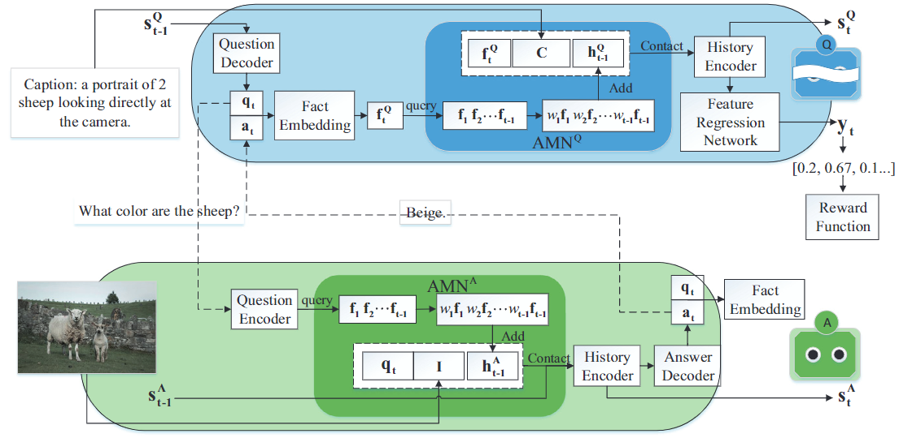
24. GuessWhich? Visual dialog with attentive memory network
Lei Zhao, Xinyu Lyu, Jingkuan Song, Lianli Gao
Pattern Recognit. 2021
PDF
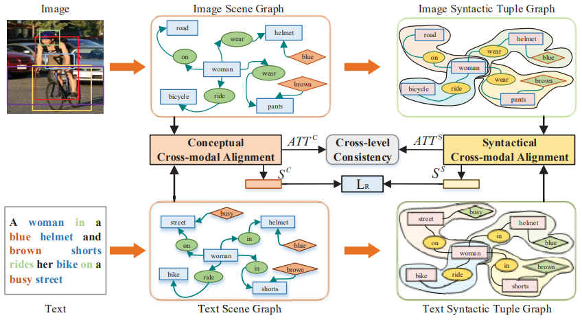
23. Conceptual and Syntactical Cross-modal Alignment with Cross-level Consistency for Image-Text Matching
Pengpeng Zeng, Lianli Gao, Xinyu Lyu, Shuaiqi Jing, Jingkuan Song
ACM Multimedia 2021
PDF
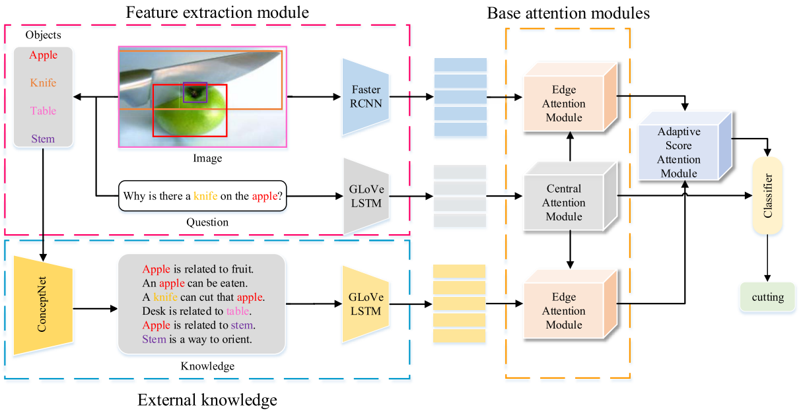
22. Rich Visual Knowledge-Based Augmentation Network for Visual Question Answering
Liyang Zhang, Shuaicheng Liu, Donghao Liu, Pengpeng Zeng, Xiangpeng Li, Jingkuan Song, Lianli Gao
IEEE Trans. Neural Networks Learn. Syst. 2021
PDF
CODE
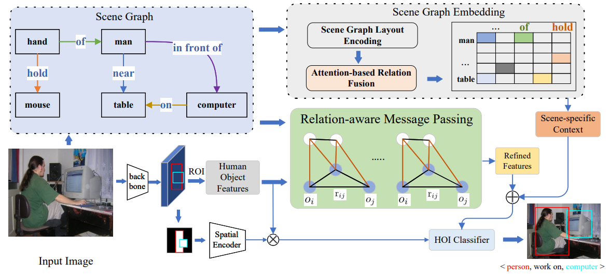
21. Exploiting Scene Graphs for Human-Object Interaction Detection
Tao He, Lianli Gao, Jingkuan Song, Yuan-Fang Li
ICCV 2021
PDF
CODE
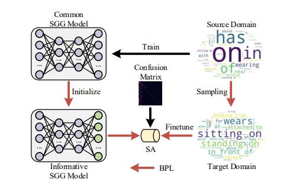
20. From General to Specific: Informative Scene Graph Generation via Balance Adjustment
Yuyu Guo, Lianli Gao, Xuanhan Wang, Yuxuan Hu, Xing Xu, Xu Lu, Heng Tao Shen, Jingkuan Song
ICCV 2021
PDF
CODE
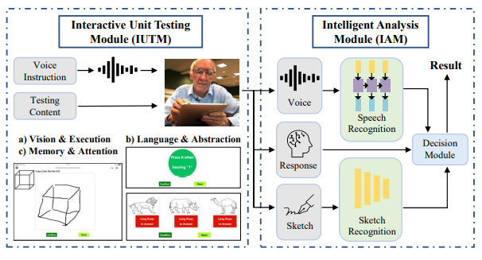
19. A System for Interactive and Intelligent AD Auxiliary Screening
Sen Yang, Qike Zhao, Lanxin Miao, Min Chen, Lianli Gao, Jingkuan Song, Weidong Le
ACM Multimedia 2021
PDF
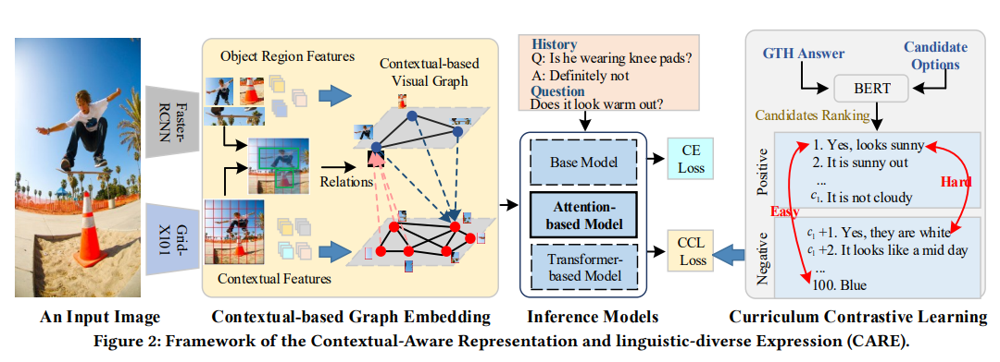
18. Exploring Contextual-Aware Representation and Linguistic-Diverse Expression for Visual Dialog
Xiangpeng Li, Lianli Gao, Lei Zhao, Jingkuan Song
ACM Multimedia 2021
PDF
CODE
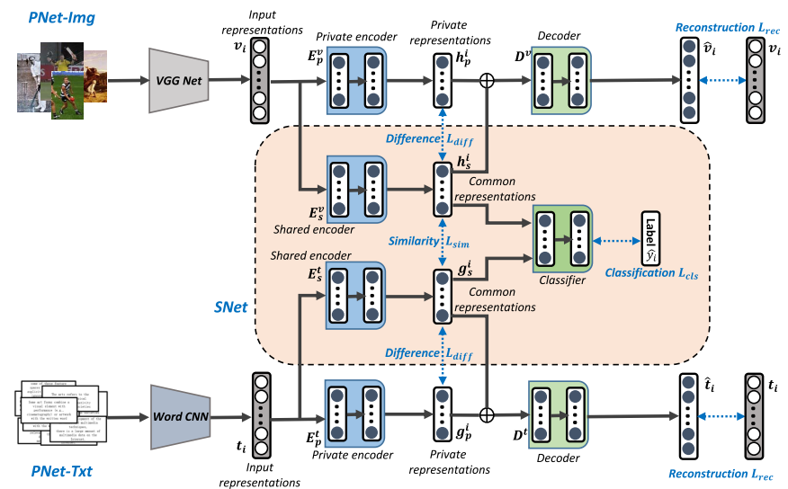
17. Learning Cross-Modal Common Representations by Private-Shared Subspaces Separation
Xing Xu, Kaiyi Lin, Lianli Gao, Huimin Lu, Heng Tao Shen, Xuelong Li
IEEE Trans. Cybern. 2020
PDF
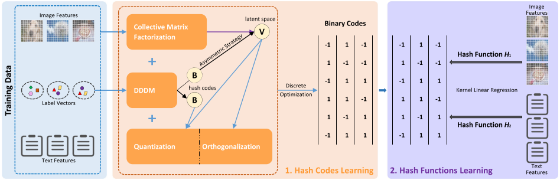
16. BATCH: A Scalable Asymmetric Discrete Cross-Modal Hashing
Yongxin Wang, Xin Luo, Liqiang Nie, Jingkuan Song, Wei Zhang, Xin-Shun Xu
IEEE Trans. Knowl. Data Eng. 2020
PDF
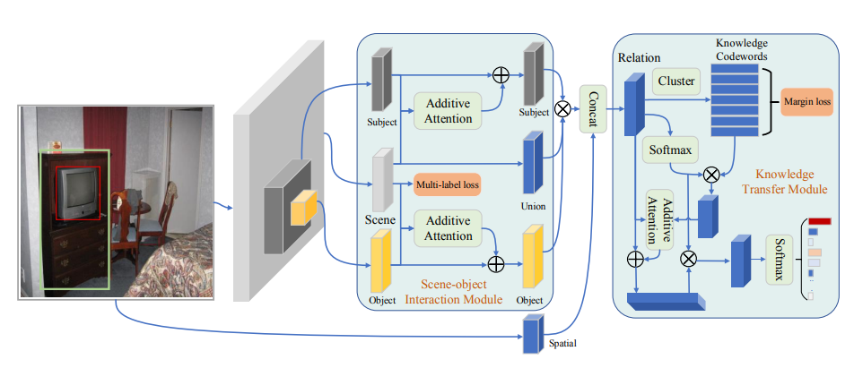
15. Learning from the Scene and Borrowing from the Rich: Tackling the Long Tail in Scene Graph Generation
Tao He, Lianli Gao, Jingkuan Song, Jianfei Cai, Yuan-Fang Li
IJCAI 2020
PDF
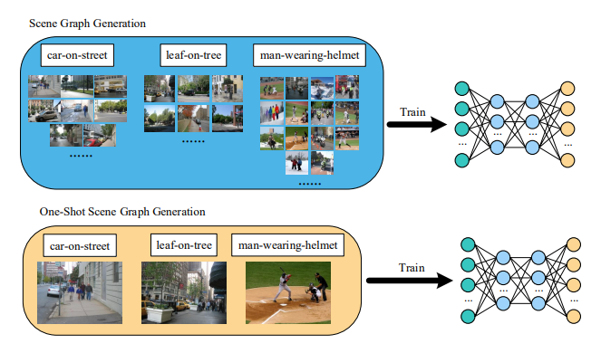
14. One-shot Scene Graph Generation
Yuyu Guo, Jingkuan Song, Lianli Gao, Heng Tao Shen
ACM Multimedia 2020
PDF
CODE
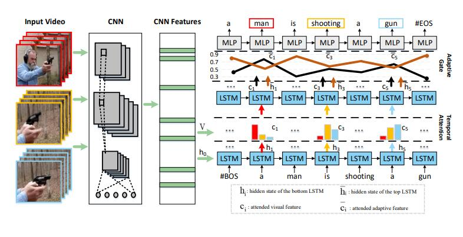
13. Hierarchical LSTMs with Adaptive Attention for Visual Captioning
Lianli Gao, Xiangpeng Li, Jingkuan Song, Heng Tao Shen
IEEE Trans. Pattern Anal. Mach. Intell. 2019
PDF
CODE
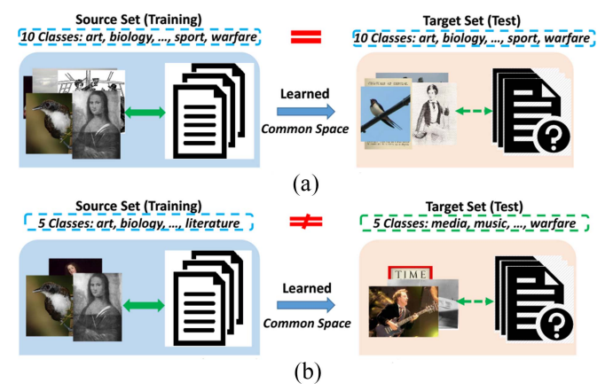
12. Ternary Adversarial Networks With Self-Supervision for Zero-Shot Cross-Modal Retrieval
Xing Xu, Huimin Lu, Jingkuan Song, Yang Yang, Heng Tao Shen, Xuelong Li
IEEE Trans. Cybern. 2019
PDF
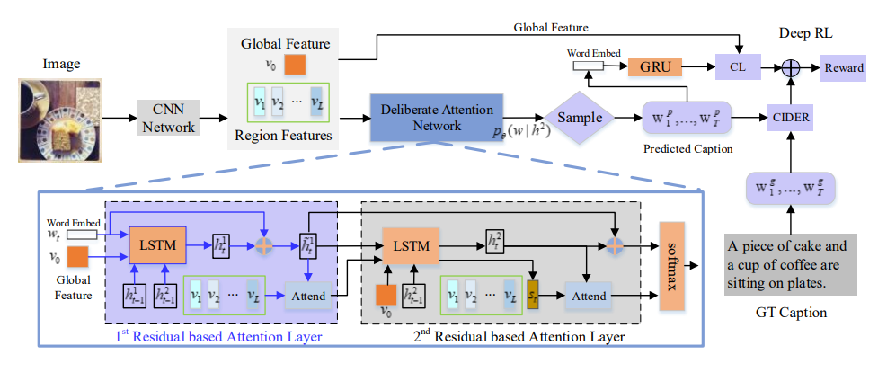
11. Deliberate Attention Networks for Image Captioning
Lianli Gao, Kaixuan Fan, Jingkuan Song, Xianglong Liu, Xing Xu, Heng Tao Shen
AAAI 2019
PDF
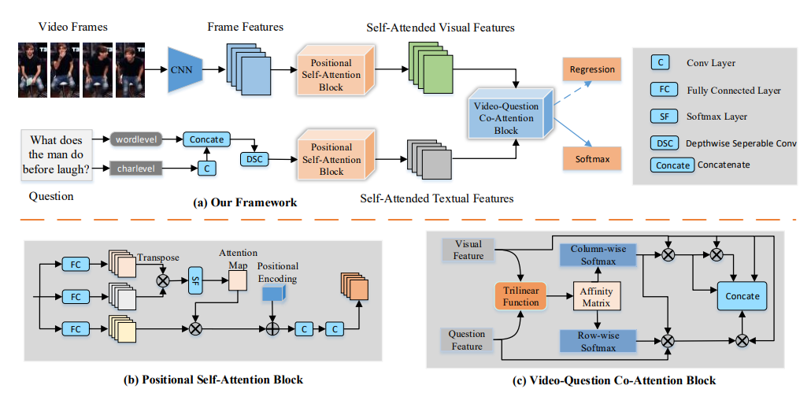
10. Beyond RNNs: Positional Self-Attention with Co-Attention for Video Question Answering
Xiangpeng Li, Jingkuan Song, Lianli Gao, Xianglong Liu, Wenbing Huang, Xiangnan He, Chuang Gan
AAAI 2019
PDF
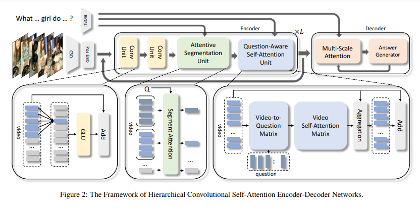
9. Open-Ended Long-Form Video Question Answering via Hierarchical Convolutional Self-Attention Networks
Zhu Zhang, Zhou Zhao, Zhijie Lin, Jingkuan Song, Xiaofei He
IJCAI 2019
PDF
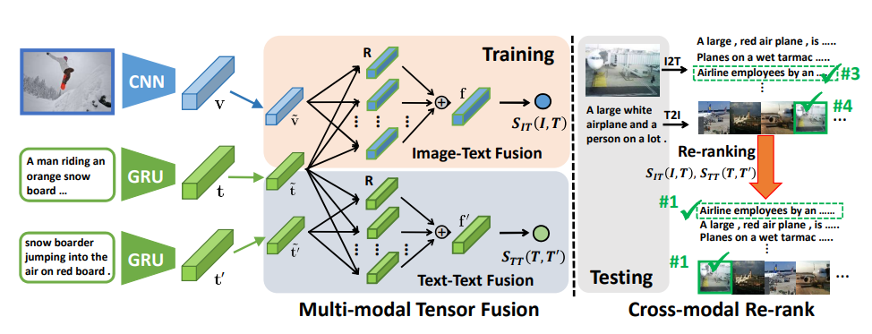
8. Matching Images and Text with Multi-modal Tensor Fusion and Re-ranking
Tan Wang, Xing Xu, Yang Yang, Alan Hanjalic, Heng Tao Shen, Jingkuan Song
ACM Multimedia 2019
PDF
CODE
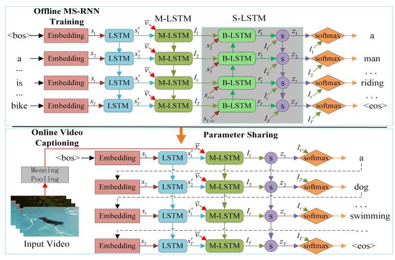
7. From Deterministic to Generative: Multimodal Stochastic RNNs for Video Captioning
Jingkuan Song, Yuyu Guo, Lianli Gao, Xuelong Li, Alan Hanjalic, Heng Tao Shen
IEEE Trans. Neural Networks Learn. Syst. 2018
PDF
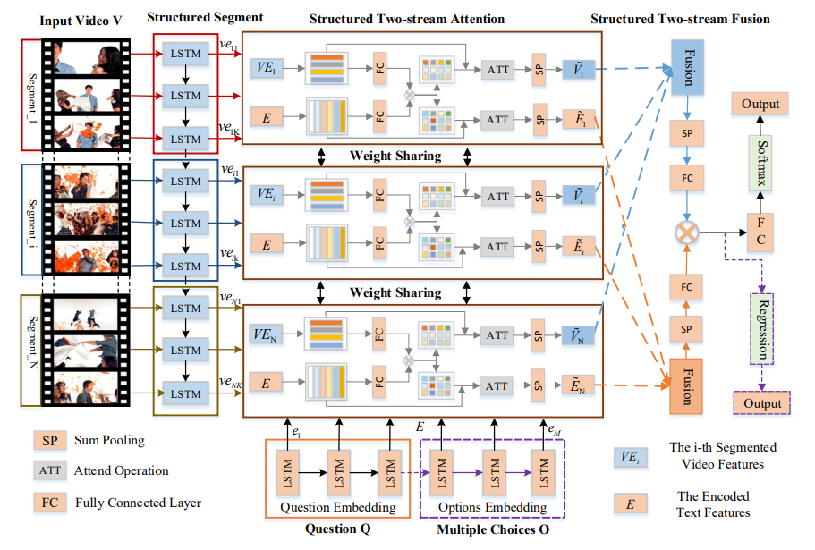
6. Structured Two-Stream Attention Network for Video Question Answering
Lianli Gao, Pengpeng Zeng, Jingkuan Song, Yuan-Fang Li, Wu Liu, Tao Mei, Heng Tao Shen
AAAI 2019
PDF
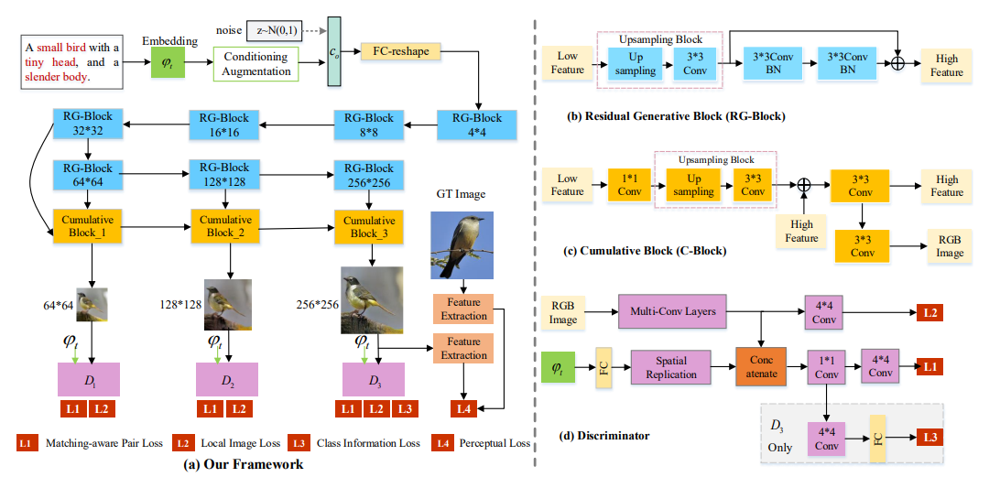
5. Perceptual Pyramid Adversarial Networks for Text-to-Image Synthesis
Lianli Gao, Daiyuan Chen, Jingkuan Song, Xing Xu, Dongxiang Zhang, Heng Tao Shen
AAAI 2019
PDF
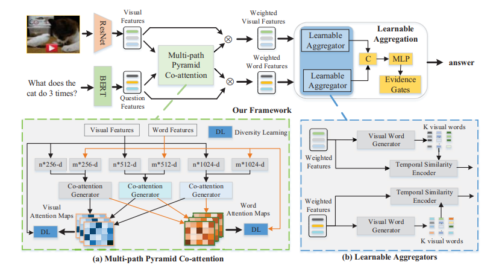
4. Learnable Aggregating Net with Diversity Learning for Video Question Answering
Xiangpeng Li, Lianli Gao, Xuanhan Wang, Wu Liu, Xing Xu, Heng Tao Shen, Jingkuan Song
ACM Multimedia 2019
PDF
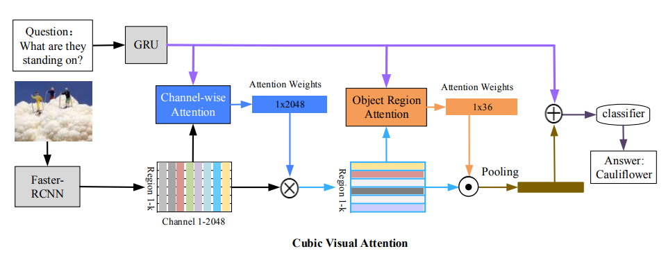
3. From Pixels to Objects: Cubic Visual Attention for Visual Question Answering
Jingkuan Song, Pengpeng Zeng, Lianli Gao, Heng Tao Shen
IJCAI 2018
PDF
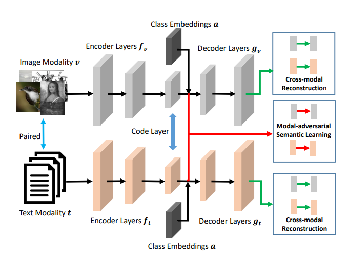
2. Modal-adversarial Semantic Learning Network for Extendable Cross-modal Retrieval
Xing Xu, Jingkuan Song, Huimin Lu, Yang Yang, Fumin Shen, Zi Huang
ICMR 2018
PDF
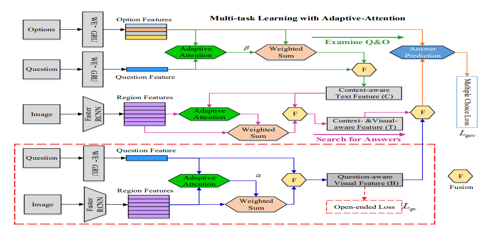
1. Examine before You Answer: Multi-task Learning with Adaptive-attentions for Multiple-choice VQA
Lianli Gao, Pengpeng Zeng, Jingkuan Song, Xianglong Liu, Heng Tao Shen
ACM Multimedia 2018
PDF
x1.00
>
<
>>
<<
O
x1.00